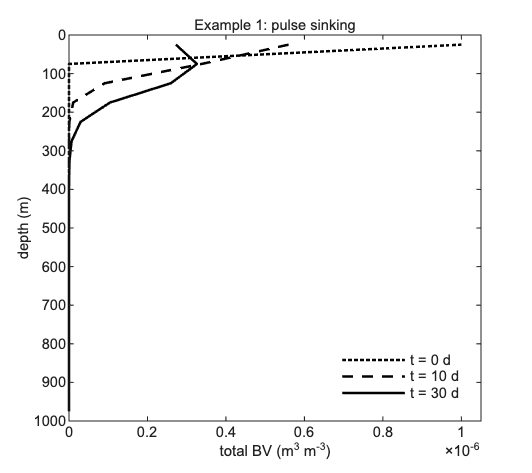
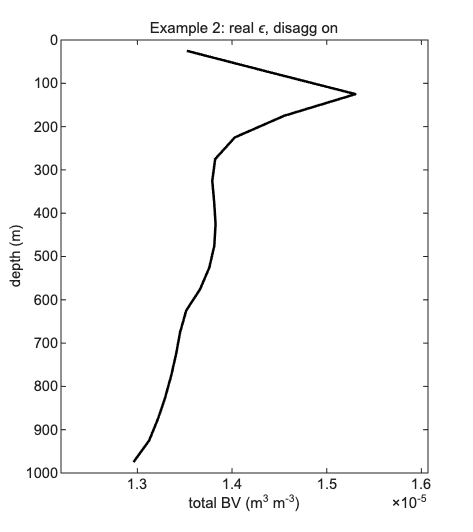
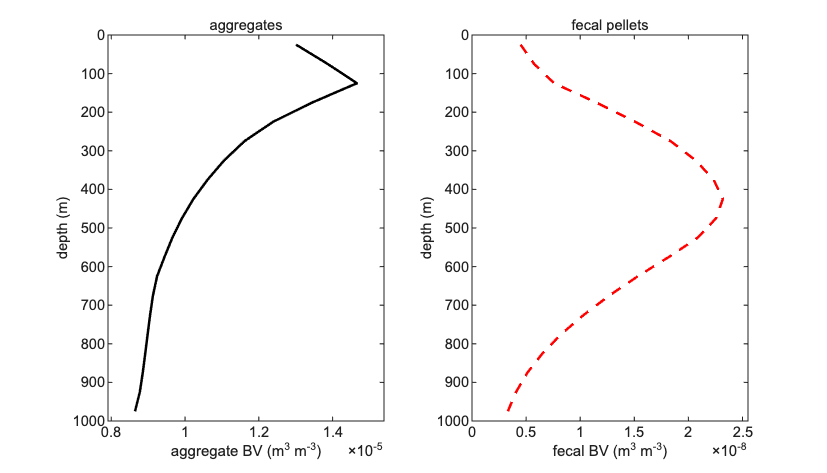

6. Worked Examples
Three example experiments of increasing complexity are provided in
scripts/examples/. Each follows the same structure: overview,
configuration, running, and expected output.
6.1. Example 1: Gravitational Settling of a Surface Pulse
Script: scripts/examples/run_example_01.m
Overview
This experiment tests the most basic feature of the model: gravitational settling in the absence of aggregation, disaggregation, or biology. A power-law size distribution is placed in the top model layer (0–50 m) and the model is integrated for 30 days with constant turbulence.
Configuration
cfg.n_sections = 30;
cfg.sinking_law = 'kriest_8';
cfg.ds_kernel_mode = 'sinking_law';
cfg.r_to_rg = 1.6;
cfg.alpha = 1.0;
cfg.enable_coag = true;
cfg.enable_disagg = false;
cfg.enable_zoo = false;
cfg.enable_microbe = false;
Running
cd('/Users/.../1d-model-testing/scripts/examples')
run_example_01
Runtime is approximately 10 seconds.
Expected output
No negatives. Good.
Saved example_01_profile.png
{kind=link}

Biovolume depth profile at t = 0 (dotted), t = 10 days (dashed), and t = 30 days (solid). The surface pulse sinks progressively deeper as particles settle under gravity.
6.2. Example 2: Depth-Varying Turbulence and Disaggregation
Script: scripts/examples/run_example_02.m
Overview
Introduces a realistic depth- and time-varying turbulence field from EXPORTS-NA observations and operator-split disaggregation. Uses an observation-based flux boundary condition at 100 m and runs until quasi-steady state.
Configuration
cfg.n_sections = 30;
cfg.sinking_law = 'kriest_8';
cfg.alpha = 0.10;
cfg.enable_coag = true;
cfg.enable_disagg = true;
cfg.disagg_mode = 'operator_split';
cfg.disagg_dmax_A = 9.39e-6 * 5;
Running
run_example_02
Requires keps_for_dave.mat and UVP .sb files in data/NA/.
Runtime is 2–5 minutes.
Expected output
Converged at cycle 13
Saved example_02_profile.png
{kind=link}

Quasi-steady total biovolume profile after convergence at spinup cycle 13. Depth-varying turbulence and disaggregation produce a smooth exponential-like attenuation with depth.
6.3. Example 3: Full Physics with Zooplankton Grazing
Script: scripts/examples/run_example_03.m
Overview
Adds zooplankton grazing, fecal pellet production, and micro-zooplankton mining to Example 2. Demonstrates that marine snow and fecal pellets have very different depth distributions because they sink at different speeds.
Configuration
cfg.enable_zoo = true;
cfg.zoo_c = 0.025;
cfg.zoo_s = 1.3e-5;
cfg.zoo_p = 0.5;
cfg.zoo_ic = 7;
cfg.enable_mining = true;
Running
run_example_03
Runtime is 3–7 minutes.
Expected output
Converged at cycle 12
Saved example_03_profile.png
{kind=link}

Quasi-steady profiles for Example 3. Left: marine snow aggregates. Right: fecal pellets. Fecal pellets are confined near the surface because they sink ~16 times faster than aggregates of the same size.